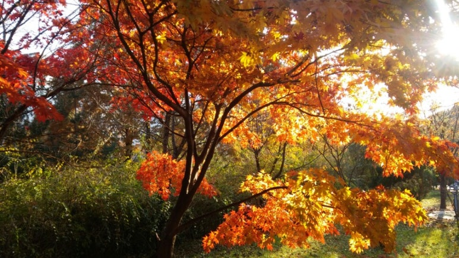

<div class="pcol2 _param(1) _postViewArea221144544562" id="post-view221144544562">
<div class="se_doc_viewer se_body_wrap se_theme_transparent" data-docversion="" id="SEDOC-1511425413859--195471563">
<div class="se_doc_header_start" id="SEDOC-1511425413859--195471563_se_doc_header_start"></div>
<!-- SE_DOC_HEADER_START -->
<div class="se_viewer_head" id="SEDOC-1511425413859--195471563_viewer_head"></div>
<div class="se_component_wrap">
<div class="se_component se_documentTitle documentTitle_blog is-fill">
<div class="se_sectionArea is-fill se_align-left">
<!-- -->
<div class="blog2_series">
<a class="pcol2" href="/PostList.naver?blogId=abydost&amp;categoryNo=6&amp;from=postList&amp;parentCategoryNo=6" onclick="sendClickNlog('pst.category','');">하소</a>
</div>
<div class="pcol1">
<!--
-->
<!-- SE_DOC_HEADER_TITLE_TOP-->
<div class="se_doc_title_top" id="SEDOC-1511425413859--195471563_se_doc_title_top"></div>
<div class="se_editArea">
<div class="se_viewArea se_ff_nanumgothic se_fs_D2">
<div class="se_editView se_title">
<div class="se_textView">
<h3 class="se_textarea">
<!-- -->햇빛 일상파크.<!-- -->
</h3>
</div>
</div>
</div>
</div><!-- SE_DOC_HEADER_TITLE_MIDDLE-->
<div class="se_doc_title_middle" id="SEDOC-1511425413859--195471563_se_doc_title_middle"></div>
<!-- SE_DOC_HEADER_CONTENTS_START -->
<!-- -->
</div>
<div class="blog2_container">
<span class="writer">
<span class="area_profile"><a class="link" href="https://blog.naver.com/abydost" onclick="sendClickNlog('pst.profile', '');" rel="noopener noreferrer" target="_blank"></a></span>
<span class="nick"><a class="link pcol2" href="https://blog.naver.com/abydost" onclick="sendClickNlog('pst.username', '');" rel="noopener noreferrer" target="_blank">하소</a></span>
<span class="desc">
<i class="dot"> ・ </i>
<span class="se_publishDate pcol2">2017. 11. 20. 22:19</span>
</span>
</span>
</div>
<div class="blog2_post_function">
<div class="overflow_menu">
<div area-hidden="true" class="lyr_overflow_menu _overflowmenu_layer" id="overflowmenu-221144544562">
</div>
</div>
<input alt="url" class="copyTargetUrl" style="display:none;" title="URL 복사" type="text" value="https://blog.naver.com/abydost/221144544562"/>
</div>
<!--
-->
<!-- SE_DOC_HEADER_CONTENTS_END -->
<!-- SE_DOC_HEADER_TITLE_BOTTOM-->
<div class="se_doc_title_bottom" id="SEDOC-1511425413859--195471563_se_doc_title_bottom"></div>
</div>
</div>
</div>
<!-- B2C 상품 -->
<!-- _BLOG_CONTENTS_HEADER_TAIL -->
<!-- SE_DOC_HEADER_END -->
<div class="se_doc_header_end" id="SEDOC-1511425413859--195471563_se_doc_header_end"></div>
<div class="se_doc_contents_start" id="SEDOC-1511425413859--195471563_se_doc_contents_start"></div>
<!-- SE_DOC_CONTENTS_START -->
<div class="se_component_wrap sect_dsc __se_component_area">
<div class="se_component se_image default">
<div class="se_sectionArea se_align-justify">
<div class="se_editArea">
<div class="se_viewArea">
<a class="se_mediaArea __se_image_link __se_link" data-linkdata='{"imgId" : "SEDOC-1511425413859--195471563_image_0_img", "src" : "https://postfiles.pstatic.net/MjAxNzExMjBfMjMw/MDAxNTExMTgzNjM3NDI4.OZ5UosngVfa-NxoPDi00vO2aeUtX46qQntEv_egRMMcg.7YHnCFagThdvZDovpjIfQYVj-jG9qyEsKwaB0Z-E8pcg.JPEG.takeshi12/%EB%8B%A8%ED%92%8D_%ED%92%8D%EA%B2%BD_1.jpg", "linkUse" : "false", "link" : ""}' data-linktype="img" href="#" onclick="return false;">

</a>
</div>
</div>
</div>
</div>
<div class="se_component se_paragraph default">
<div class="se_sectionArea">
<div class="se_editArea">
<div class="se_viewArea se_ff_nanumgothic se_fs_T3 se_align-left">
<div class="se_editView">
<div class="se_textView">
<p class="se_textarea"><!-- SE3-TEXT { --><span><br/></span><span> 주말에 산책하러 나갔는데 마주한 풍경이 너무 좋은 느낌이어서 도전해 보았습니다...만. 풍경을 찍는 건 DSLR을 하나 장만하면 배우고 싶습니다. 물론 인물 사진을 찍는 것도 꼭. 코스튬이 가득한 분위기 있는 스튜디오 같은 작업장이자 회사인 집을 만드는 목표를(?) 집과 직장이 같은 곳인 건 좀 아니겠죠.<br/></span><span><br/></span><span> "자, 여길 봐주세요 햇님."<br/></span><span> 그러자 햇빛은 선명하게 나뭇잎을 핥고 있었다.<br/></span><span> "가을의 맛이로구나."<br/></span><span><br/></span><span> - 홀로 뇌 속에서.-</span><span> <br/></span><span><br/></span>와, 이 세상 인간도 아닙니다.<!-- } SE3-TEXT --></p>
</div>
</div>
</div>
</div>
</div>
</div>
</div>
<!-- SE_DOC_CONTENTS_END -->
<div class="__se_doc_title_end" id="se_doc_contents_end"></div>
<div class="se_doc_footer" id="SEDOC-1511425413859--195471563_se_doc_footer"></div>
</div>
</div>